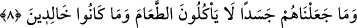
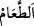
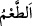

vermesi, bu bilginin doğru olmasını gerektirir. Özellikle o zamanki kitap ehli,
Rasûlullah (s.a.)’e düşmanlık konusunda müşrikleri destekliyorlar ve O’nun hakkında
kendileriyle fikir alışverişinde bulunuyorlardı. Onlar, her ne kadar Rasûlullah (s.a.)’in
peygamberliğini inkâr etseler de, peygamberlerin insan olmasını inkâr etmiyorlardı.
Rivâyete göre İmam Gazzâlî (r.h.)’a “Sizin usûl ve furûa dair bunca geniş bilgiyi
elde etmeniz neyle oldu?” diye soruldu. O da bu âyeti okudu. Soru sormanın bilgi
edinmenin sebeplerinden ve yollarından olduğuna işâret etti.
8. Biz onları (peygamberleri), yemek yemez birer (cansız) ceset olarak
yaratmadık. Onlar (bu dünyada) ebedî de değillerdir.
“Biz onları” yâni peygamberleri, “yemek yemez birer” cansız “cesed olarak
yaratmadık.” Cesed; insan, cin ve meleklerin cismine denir. Râgıb şöyle der: “Cesed
de cisim gibidir. Ancak cesed daha özeldir, cesedin bir rengi vardır. Cismin ise su ve
hava gibi bir rengi yoktur. Âyet, ‘Bu halde değilken, onu bir cesed kıldı’ anlamında
değildir... Bilakis “İlk baştan böyle yarattı” demektir. Nitekim “Sivrisineği küçük, fili
de büyük kılanı tesbih ederim.” sözü de bu tarzda söylenmiştir.
“
”, buğday ve yenilen şey demektir. “
” ise gıda almak/yemektir. Bu taktirde
mânâ şöyledir: “Biz peygamberleri, yemeden içmeden müstağnî cesedler olarak
yaratmadık. Aksine onları vücudun sarfiyatını tamamlayan yiyecekleri elde etmeye
muhtaç kıldık.
“Onlar (bu dünyada) ebedî de değillerdir.” Çünkü vücudun sarfiyatının
karşılanmamasının, çözülüp dağılmasının sonucu kesinlikle fenâdır. “Hulûd (ebedîlik)”
ise bir şeyin fesada uğramaktan uzak olması ve bulunduğu hâl üzere bâkî kalmasıdır.
Âyetteki ebedî olmaktan maksad ya melekler gibi uzun süre kalmaktır ya da ebedî
kalmaktır. Çünkü Mekkeliler, onların ölümsüz olduklarına inanıyorlardı. Buna göre
mânâ şöyledir: Peygamberleri, çeşitli gıdalarla beslenen ve sonunda ecellerine göre
ölümle âhirete varan cesetler/bedenler olarak yarattık. Onları birer melek veya
yemeden ve içmeden müstağnî melekler gibi fanîlikten kurtulmuş varlıklar kılmadık.
Peygamberler hakkında melekler için olduğu gibi ebedîlik söz konusu değildir.
et-Te’vîlâtü’n-Necmiyye’de şöyle der: “İşâret etmektedir ki peygamberler ve velîler,
meleklerin aksine yemeye muhtaçtırlar. Bu, nübüvvete ve velâyete bir halel getirmez.
Aksine bu ihtiyaçlar, onların durumlarının gereklerinden ve kemâllerinin ardından gelen
hususlardandır. Çünkü onlar için bunda bir çok faydalar vardır. Şöyle ki gıdalar, insânî
ruhu meydana getiren hayvânî rûh için kandile göre yağ gibidir. Hayvânî ruh, bütün
nefsânî şehevânî sıfatların kaynağı, şevk ve muhabbetin bineğidir. Sâdık sâlik, uzak
mesafeleri onunla kat eder. Âşık, vuslat Kâbesine varmak için ayrık tehlikelerini onunla